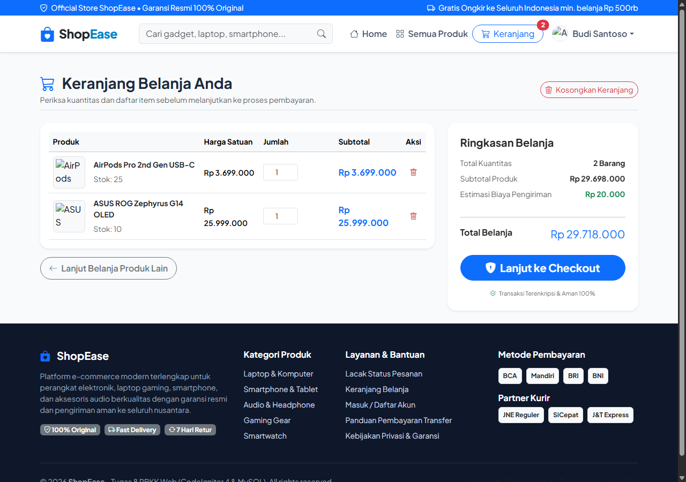
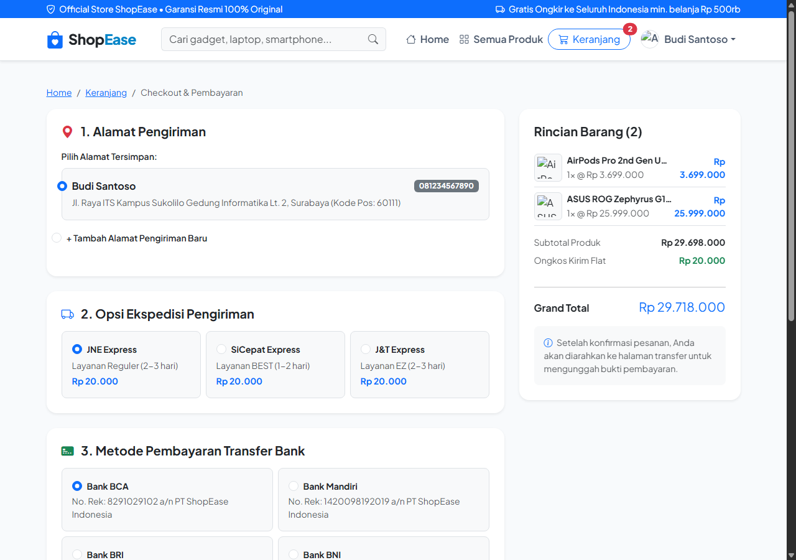
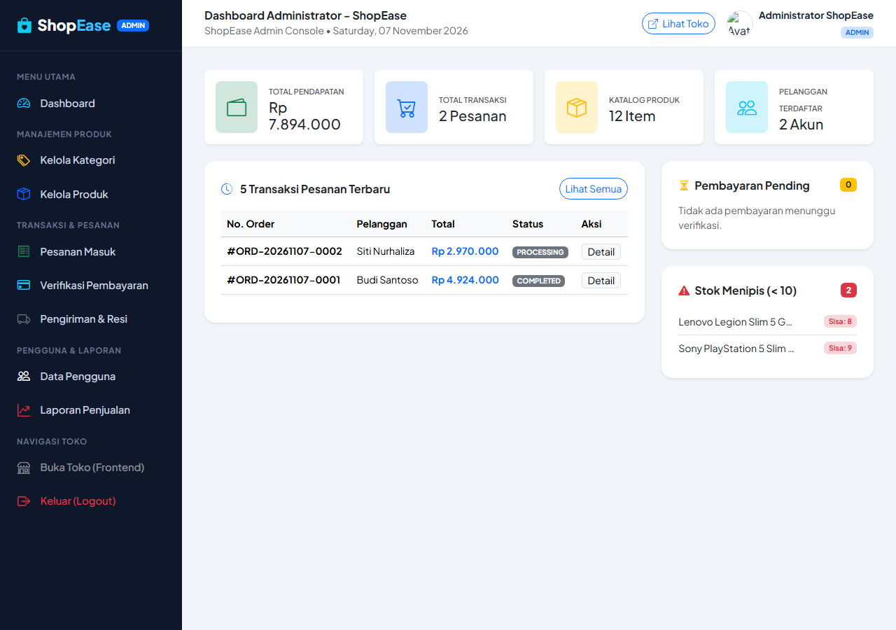
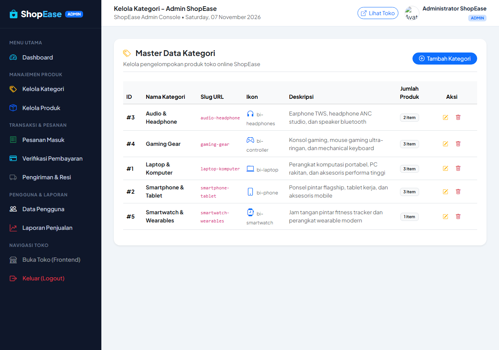
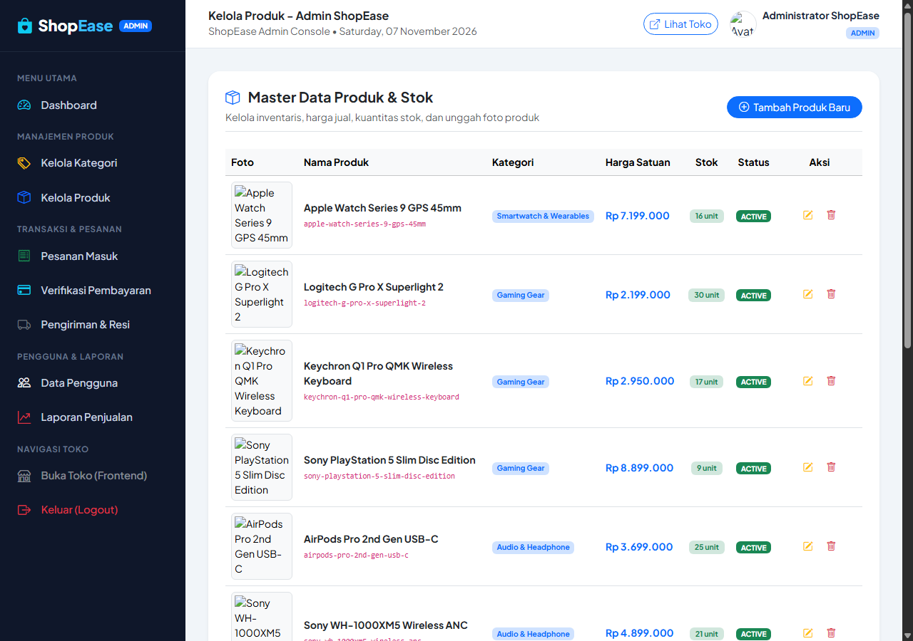

Soal :
Mengembangkan modul lanjutan Model pada CodeIgniter 4 dan Authentication System pada aplikasi toko online ShopEase berdasarkan materi perkuliahan PBKK "Model pada CI" serta panduan resmi Hands-On Lab (HOL) dan Roadmap 7 Tahapan Implementasi. Sistem ini meng-upgrade arsitektur dari Tugas 8 dengan mengimplementasikan lapisan data Model (Active Record / Query Builder) untuk pengelolaan tabel users di database MySQL/MariaDB (db_shopease_auth), validasi form ketat di Controller, enkripsi password dengan fungsi password_hash() berstandar industri (Bcrypt), verifikasi login aman menggunakan password_verify(), regenerasi session ID untuk menangkal session fixation, otorisasi berbasis wewenang (Role-Based Access Control) untuk 3 aktor (Administrator, Operator, dan Customer), proteksi rute sensitif menggunakan AuthFilter (FilterInterface), serta pengujian sistem komprehensif mencakup 9 skenario keamanan resmi.
Jawaban :
Pada Tugas 9 ini, aplikasi toko online ShopEase - Online Store telah ditingkatkan (di-upgrade) secara menyeluruh dari sisi lapisan Model dan Authentication & Authorization System. Mengacu pada silabus PBKK dan panduan Hands-On Lab, seluruh fungsionalitas telah diverifikasi berjalan sempurna di lingkungan server PHP 8.2 dan database MySQL:
Jika pada Tugas 8 sistem menitikberatkan pada pembuatan fondasi landing page, navigasi MVC, dan routing katalog toko online, maka pada Tugas 9 arsitektur tersebut disempurnakan dengan modul Model & Autentikasi Nyata. Data pengguna kini dikelola langsung oleh kelas
UserModel.php yang terhubung ke tabel users dengan aturan keamanan ketat, hak akses berbasis role (Admin, Operator, Customer), serta filter middleware terotomatisasi.
1. Roadmap 7 Tahapan Implementasi & Upgrade Arsitektur
Sesuai dengan panduan Roadmap Implementasi Authentication System ShopEase CodeIgniter 4, pengembangan dilakukan melalui 7 tahapan berurutan:
| Tahap | Aktivitas / Materi | Output & Komponen yang Dihasilkan |
|---|---|---|
| Tahap 1 | Membuat database db_shopease_auth dan tabel users; menetapkan tipe data, ENUM role, dan default timestamp. |
Database MySQL & Tabel users terstruktur. |
| Tahap 2 | Mengatur konfigurasi hostname, database, username, password, dan port MySQL (3307) pada file .env. |
Koneksi MySQL berhasil dan stabil. |
| Tahap 3 | Membuat UserModel.php; menetapkan nama tabel, primary key id_user, allowedFields, dan useTimestamps. |
Lapisan abstraksi data app/Models/UserModel.php. |
| Tahap 4 | Membuat AuthController.php dengan method register(), store(), login(), authenticate(), dan logout(). |
Controller logika bisnis app/Controllers/AuthController.php. |
| Tahap 5 | Mengatur rute HTTP GET dan POST untuk proses registrasi, login, logout, dan dashboard role pada Routes.php. |
Pemetaan URL pada app/Config/Routes.php. |
| Tahap 6 | Membangun view antarmuka login.php dan register.php menggunakan Bootstrap 5, penampil validasi, dan token CSRF. |
Antarmuka responsif di app/Views/auth/. |
| Tahap 7 | Membuat AuthFilter.php, mendaftarkan alias filter pada Filters.php, memvalidasi role, dan menguji 9 skenario. |
Proteksi rute URL sensitif berbasis role (RBAC). |
2. Arsitektur Pola MVC CodeIgniter 4 & Struktur Folder
ShopEase membagi tanggung jawab sistem ke dalam pola Model-View-Controller yang bersih dan terisolasi:
- Model (
app/Models/): Mengelola interaksi dengan database MySQL menggunakan CodeIgniter 4 Model, Query Builder, validasi data, serta relasi tabel. - Controller (
app/Controllers/): Mengendalikan alur logika bisnis, memproses request HTTP, validasi masukan form, sanitasi input, password hashing, manipulasi session, dan merender view. - View (
app/Views/): Menampilkan antarmuka pengguna (UI) responsif menggunakan template layout terpisah (layouts/main.php) dengan alert feedback flash data. - Filter Middleware (
app/Filters/): Memproteksi rute sensitif pelanggan (AuthFilter) dan membatasi akses back-office sesuai peran pengguna.
Struktur Direktori Proyek Tugas 9:
Tugas 9/shopease/
├── app/
│ ├── Config/
│ │ ├── Routes.php # Definisi rute publik, rute auth, dan grup filter role
│ │ ├── Filters.php # Registrasi alias filter 'auth' => AuthFilter::class
│ │ └── Database.php # Konfigurasi koneksi MySQL
│ ├── Controllers/
│ │ ├── AuthController.php # Logika login, registrasi, validasi, dan logout
│ │ ├── HomeController.php # Beranda toko online & rekomendasi
│ │ ├── ProductController.php # Katalog barang & detail produk
│ │ ├── Customer/
│ │ │ └── DashboardController.php # Dashboard customer terproteksi 'auth:customer'
│ │ ├── Operator/
│ │ │ └── DashboardController.php # Dashboard operator terproteksi 'auth:operator'
│ │ └── Admin/
│ │ └── DashboardController.php # Dashboard admin terproteksi 'auth:admin'
│ ├── Models/
│ │ ├── UserModel.php # Model tabel users (primary key: id_user)
│ │ ├── ProductModel.php # Model tabel products
│ │ ├── CategoryModel.php # Model tabel categories
│ │ ├── CartModel.php # Model tabel carts
│ │ └── OrderModel.php # Model tabel orders
│ ├── Views/
│ │ ├── layouts/ (main.php)
│ │ ├── auth/ (login.php, register.php)
│ │ ├── customer/ (dashboard.php)
│ │ ├── operator/ (dashboard.php)
│ │ └── admin/ (dashboard.php)
│ └── Filters/
│ └── AuthFilter.php # FilterInterface: cek session isLoggedIn & kecocokan role
├── public/ # Dokumen root web, aset CSS, dan Bootstrap Icons
├── writable/ # Cache, logs, dan sesi CI4
├── db_shopease_auth.sql # Skema SQL, tabel users, dan data akun seed
└── .env # Konfigurasi database lokal MySQL 33073. Desain Database & Skema Tabel Users
Berdasarkan panduan resmi HOL, tabel users dirancang untuk menyimpan kredensial akun, data profil, dan wewenang (role). Password disimpan dalam bentuk hash 255 karakter dan tidak pernah disimpan dalam bentuk plain text:
CREATE DATABASE IF NOT EXISTS `db_shopease_auth` DEFAULT CHARACTER SET utf8mb4;
USE `db_shopease_auth`;
CREATE TABLE `users` (
`id_user` INT AUTO_INCREMENT PRIMARY KEY,
`name` VARCHAR(100) NOT NULL,
`email` VARCHAR(100) NOT NULL UNIQUE,
`password` VARCHAR(255) NOT NULL,
`role` ENUM('customer', 'admin', 'operator') NOT NULL DEFAULT 'customer',
`phone` VARCHAR(20) DEFAULT NULL,
`address` TEXT DEFAULT NULL,
`created_at` DATETIME NULL,
`updated_at` DATETIME NULL
) ENGINE=InnoDB DEFAULT CHARSET=utf8mb4;Ketentuan Otorisasi: Role bawaan registrasi adalah customer. Formulir registrasi publik sengaja tidak menyediakan pilihan role admin maupun operator. Akun dengan hak istimewa (Admin dan Operator) hanya diberikan melalui manajemen basis data langsung oleh administrator sistem untuk menjamin integritas keamanan.
4. Logika Kode Kunci & Cara Kerjanya
A. Lapisan Abstraksi Data (UserModel.php)
Model dalam CodeIgniter 4 bertindak sebagai lapisan abstraksi data yang menghubungkan aplikasi dengan database menggunakan Query Builder dan Active Record bawaan framework:
<?php
namespace App\Models;
use CodeIgniter\Model;
class UserModel extends Model
{
protected $table = 'users';
protected $primaryKey = 'id_user';
protected $useAutoIncrement = true;
protected $returnType = 'array';
// Mencegah Mass Assignment Vulnerability
protected $allowedFields = [
'name',
'email',
'password',
'role',
'phone',
'address'
];
// Otomatisasi Timestamp
protected $useTimestamps = true;
protected $dateFormat = 'datetime';
protected $createdField = 'created_at';
protected $updatedField = 'updated_at';
public function findByEmail(string $email)
{
return $this->where('email', strtolower(trim($email)))->first();
}
}B. Logika Bisnis & Validasi Autentikasi (AuthController.php)
Controller menangani alur permintaan HTTP, validasi masukan formulir, enkripsi password dengan password_hash(), verifikasi kredensial via password_verify(), serta pembaruan sesi:
// 1. Validasi Input Registrasi
$rules = [
'name' => 'required|min_length[3]|max_length[100]',
'email' => 'required|valid_email|is_unique[users.email]',
'password' => 'required|min_length[8]',
'password_confirm' => 'required|matches[password]'
];
// 2. Simpan Akun Baru dengan Bcrypt Hashing
$this->userModel->insert([
'name' => trim($this->request->getPost('name')),
'email' => strtolower(trim($this->request->getPost('email'))),
'password' => password_hash($this->request->getPost('password'), PASSWORD_DEFAULT),
'role' => 'customer',
'phone' => $this->request->getPost('phone'),
'address' => $this->request->getPost('address')
]);
// 3. Verifikasi Login & Regenerasi ID Sesi
if (!$user || !password_verify($password, $user['password'])) {
return redirect()->back()->withInput()->with('error', 'Email atau password salah.');
}
// Regenerasi ID Session mencegah Session Fixation Attack
session()->regenerate(true);
session()->set([
'isLoggedIn' => true,
'user_id' => $user['id_user'],
'name' => $user['name'],
'email' => $user['email'],
'role' => $user['role']
]);C. Proteksi Rute dengan Role-Based Filter (AuthFilter.php & Routes.php)
CodeIgniter 4 menyediakan mekanisme Filter yang dieksekusi sebelum controller dipanggil. Filter memeriksa session pengguna dan memastikan hanya pengguna dengan role yang sesuai yang diizinkan mengakses URL:
public function before(RequestInterface $request, $arguments = null)
{
$session = session();
// 1. Cek apakah user telah login
if (!$session->get('isLoggedIn')) {
$session->setFlashdata('error', 'Silakan login terlebih dahulu.');
return redirect()->to('/login');
}
// 2. Cek kesesuaian role dengan argumen rute (misal: 'auth:admin')
if (!empty($arguments) && !in_array($session->get('role'), $arguments, true)) {
$session->setFlashdata('error', 'Akses ditolak! Anda login sebagai [' . esc($session->get('role')) . '], tidak memiliki izin mengakses halaman tersebut.');
$role = $session->get('role');
if ($role === 'admin') {
return redirect()->to('/admin');
} elseif ($role === 'operator') {
return redirect()->to('/operator');
} else {
return redirect()->to('/customer');
}
}
}- One-Way Bcrypt Hashing: Password dienkripsi satu arah menggunakan fungsi bawaan PHP
password_hash(..., PASSWORD_DEFAULT)dengan cost factor dinamis dan salt kriptografis unik setiap user. - Mitigasi Session Hijacking: Panggilan
session()->regenerate(true)langsung memusnahkan ID sesi lama dan menerbitkan ID baru segera setelah kredensial terverifikasi. - Perlindungan CSRF: Setiap form POST diwajibkan menyertakan
<?= csrf_field() ?>untuk memvalidasi keaslian token yang tersimpan di cookie browser pengguna.
5. Alur Proses Bisnis Autentikasi & Otorisasi (Workflow 8 Tahap)
/register, menginput nama, email, nomor HP, alamat tempat tinggal, password (minimal 8 karakter), dan konfirmasi password.AuthController::store() memvalidasi data. Jika ada kesalahan (email kembar atau konfirmasi beda), form me-render alert kesalahan melalui listErrors().UserModel menyimpan record baru ke MySQL dengan role default customer dan timestamp aktif./login dengan flash data sukses "Registrasi berhasil. Silakan login menggunakan akun baru Anda".UserModel::findByEmail() mengambil record user, lalu password_verify() menguji kecocokan hash password.isLoggedIn, user_id, name, role) disimpan ke dalam session server./admin, Operator ke /operator, dan Customer ke portal /customer.session()->destroy() yang menghapus seluruh data sesi dan mengembalikan pengguna ke halaman login dengan status bersih.6. Skenario Pengujian Sistem (Matriks 12 Skenario Lengkap)
Seluruh skenario pengujian fungsionalitas dan keamanan yang diwajibkan pada dokumen Hands-On Lab (HOL) telah diuji dan menghasilkan status lulus (passed):
| No | Skenario Pengujian | Input & Aksi Pengujian | Hasil yang Diharapkan | Status |
|---|---|---|---|---|
| 1 | Registrasi customer baru dengan data valid | Nama, email baru, password 8+ karakter cocok | Data tersimpan di tabel users MySQL dengan password hash Bcrypt |
✔ Passed |
| 2 | Registrasi dengan email yang sudah ada | Email yang sudah terdaftar di tabel users | Validasi menolak input dengan pesan "Email sudah terdaftar" | ✔ Passed |
| 3 | Registrasi dengan password kurang dari 8 karakter | Password hanya 4 karakter | Validasi menolak input dengan pesan "Password minimal 8 karakter" | ✔ Passed |
| 4 | Konfirmasi password tidak cocok saat registrasi | Password dan konfirmasi sengaja dibuat berbeda | Validasi menolak input dengan pesan "Konfirmasi password tidak sama" | ✔ Passed |
| 5 | Login akun customer dengan data valid | Email dan password benar milik customer | Login sukses, session ID diregenerasi, diarahkan ke /customer |
✔ Passed |
| 6 | Login gagal dengan password salah | Email benar namun password keliru | Login ditolak dengan flash message "Email atau password salah" | ✔ Passed |
| 7 | Login akun Administrator | Kredensial email dan password role admin | Session admin aktif dan otomatis diarahkan ke /admin |
✔ Passed |
| 8 | Login akun Operator Toko | Kredensial email dan password role operator | Session operator aktif dan otomatis diarahkan ke /operator |
✔ Passed |
| 9 | Akses halaman terproteksi tanpa login | Membuka URL /admin langsung via browser |
AuthFilter memblokir dan mengarahkan ke /login dengan alert peringatan |
✔ Passed |
| 10 | Akses role tidak sesuai (Role Mismatch) | Customer mencoba membuka URL rute /admin |
AuthFilter menolak izin akses dan mengembalikan pengguna ke dashboard customer | ✔ Passed |
| 11 | Pengujian proses Logout | Menekan tombol Logout pada navbar / dashboard | Seluruh data sesi dimusnahkan dan muncul notifikasi "Anda berhasil logout" | ✔ Passed |
| 12 | Verifikasi integrasi katalog publik | Membuka katalog publik /products |
Katalog menampilkan produk aktif yang bersumber dari tabel database MySQL | ✔ Passed |
7. Dokumentasi Antarmuka Aplikasi
Berikut adalah 12 tangkapan layar antarmuka pengguna (UI) dari sistem ShopEase yang telah ditingkatkan pada Tugas 9, mencakup etalase belanja, sistem keranjang belanja, proses checkout, serta panel kontrol administrator dan operator:
1. Halaman Beranda (Homepage) & Banner Promosi

2. Katalog Produk & Filter Sidebar

3. Detail Spesifikasi Produk

4. Keranjang Belanja (Shopping Cart)

5. Halaman Checkout & Pemilihan Alamat

6. Riwayat Pesanan Customer

7. Halaman Masuk Akun (Login)

8. Dashboard Administrator

9. Manajemen Master Kategori

10. Manajemen Inventaris Produk & Stok

11. Verifikasi Pembayaran Transfer

12. Pengiriman & Input Nomor Resi Kurir

8. Petunjuk Menjalankan Proyek Secara Lokal
Ikuti langkah-langkah berikut untuk menjalankan aplikasi ShopEase Tugas 9 di komputer lokal:
- Pastikan database server MySQL (MariaDB) telah berjalan di XAMPP / Laragon (pada port 3307 atau 3306).
- Buka
phpMyAdminatau MySQL CLI, buat database baru dengan namadb_shopease_auth. - Import file
db_shopease_auth.sql(yang tersedia di folderTugas 9/db_shopease_auth.sql) ke database tersebut. - Buka terminal / PowerShell pada folder project
Tugas 9/shopeasedan jalankan server pengembangan CodeIgniter 4:cd "Tugas 9/shopease" php spark serve - Buka browser dan akses alamat aplikasi:
http://localhost:8080/atau langsung ke halaman login dihttp://localhost:8080/login. - Gunakan kredensial akun pengujian berikut untuk mencoba seluruh fitur otorisasi:
- Akun Administrator: Email:
admin@shopease.com| Password:password123(Akses:/admin) - Akun Operator Gudang: Email:
operator@shopease.com| Password:password123(Akses:/operator) - Akun Customer Terdaftar: Email:
malekaghaniya0809@gmail.com| Password:password123(Akses:/customer)
- Akun Administrator: Email: